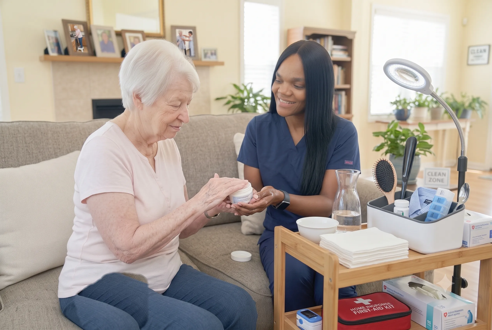

The Tasks That Quietly Become Impossible
Independence rarely disappears all at once. It goes one task at a time. Getting into the bath becomes frightening. Buttons become fiddly. Standing long enough to shave becomes too tiring. Each one on its own seems minor, and each one is quietly negotiated around until the day somebody realises how much has been given up.
Personal care support restores those tasks rather than taking them over. The distinction matters enormously. A good care aide does not wash somebody — they help somebody wash, doing only the part that has become genuinely difficult and leaving the rest to the person.
For many older adults, accepting this help is the hardest step in the whole process. It is intimate, it is a visible admission that something has changed, and it is frequently resisted for months longer than is safe. How the first visits are handled largely determines whether it is accepted at all.
Our aim is never to do things for someone. It is to do only the part they can no longer manage, and no more than that.

Signs Personal Care Support Would Help
Families usually notice these before the person will acknowledge them.
Personal hygiene has slipped
Bathing less often, hair or nails unattended, or clothes worn several days running. Almost always this is about difficulty or fear rather than choice.
Bathing has become frightening
Getting in and out of a bath or shower is where a large share of household falls happen, and older adults often stop washing properly rather than admit they are afraid.
Dressing takes a long time or gets abandoned
Buttons, zips, socks and shoes require fine motor control and balance. When these go, people default to whatever is easiest to put on.
Weight is coming off
Often this is not appetite. It is that cooking has become too much, or that eating is difficult without help.
Continence has become an issue
Frequently hidden out of embarrassment for a long time before anyone is told, and one of the strongest reasons people withdraw from going out.
A family member is doing intimate care
Adult children helping a parent bathe or toilet is workable for some families and quietly distressing for many. It is a legitimate reason to bring someone in.
What Personal Care Support Actually Involves
Support is built around the person's existing routine rather than imposing a new one. These are the areas a care plan draws from.
Bathing, Showering and Personal Hygiene
Washing is where dignity is most easily lost and most easily protected. Our care aides work at the person's pace, keep them covered wherever possible, explain before doing rather than announcing afterwards, and hand over each step the person can still manage themselves.
Safety runs alongside. The bathroom is the highest-risk room in most homes, and a supported shower is far safer than an unsupported one attempted at four in the morning because nobody was there to help at a reasonable hour.
Where a full shower has become too much, we adapt — strip washes, seated showering, or breaking the routine across the day rather than exhausting someone in one go.
- Assisted bathing and showering
- Strip washes where a shower is too tiring
- Hair washing, drying and styling
- Shaving and skin care
- Nail and foot hygiene within scope
- Safe transfers in and out of the bathroom
Dressing, Grooming and Appearance
How somebody is dressed affects how they are treated and how they feel about themselves. An older adult left in nightwear all day is being told something, whether anyone means it or not.
Support with dressing means the person wears their own clothes, chosen by them, appropriate to the day and the weather — not whatever is easiest to get on. It also means noticing when clothing has stopped fitting, which is often the first visible sign of weight loss.
- Assistance with dressing and undressing
- Support choosing clothing appropriate to the day
- Help with fastenings, socks and footwear
- Grooming, hair and appearance
- Support with glasses, hearing aids and dentures
- Noticing and reporting changes in fit or condition
Continence and Toileting Support
This is the area people are most reluctant to accept help with, and the one where discretion matters most. Our aides are matter-of-fact about it, never rush it, and preserve as much privacy and independence as the situation allows.
Practical support also reduces risk. A great many falls happen on unassisted night-time trips to the bathroom, and a great deal of social withdrawal traces back to anxiety about continence rather than to the condition itself.
- Discreet toileting assistance
- Continence product management
- Support with commodes and bathroom transfers
- Skin care and hygiene after episodes
- Overnight and early morning support
- Reporting changes that may need clinical review
Mobility, Transfers and Moving Safely
Helping somebody move safely is a technique, not simply a matter of being strong. Poor transfer technique injures the person being moved and the person doing the moving — a very common reason family carers end up with their own back problems.
Our aides are trained in safe transfer technique and use the equipment that is in place properly. Just as importantly, they encourage the movement the person can still do, because doing it is what preserves it.
- Safe transfers (bed, chair, toilet, bath)
- Walking support and steadying
- Correct use of frames, walkers and hoists
- Repositioning for comfort and pressure relief
- Encouragement of independent movement
- Fall risk observation and reporting
Meals, Nutrition and Hydration
Poor nutrition in older adults is common, consequential and easy to miss. Shopping becomes hard, cooking for one feels pointless, and the effort of preparing a meal outweighs the appetite for it.
Support ranges from preparing a full meal to simply being present while someone eats. Cultural and personal food preferences matter here more than anywhere — Metro Vancouver is diverse, and food is one of the last pleasures people want interfered with.
- Meal preparation to the person's preferences
- Culturally appropriate cooking
- Assistance with eating where needed
- Hydration encouragement and monitoring
- Support with shopping lists and food supplies
- Reporting appetite and intake changes
Daily Routine, Household and Company
A visit is rarely only the task it was booked for. Beds get made, laundry gets done, the fridge gets checked, the mail gets opened, and somebody has a conversation with a person who may not otherwise speak to anyone that day.
Keeping a familiar daily rhythm intact is one of the most protective things a care plan can do, particularly where there is memory impairment. Routine is orientation.
- Support with daily routines and structure
- Light housekeeping around care tasks
- Laundry and bed changing
- Medication reminders (within care aide scope)
- Companionship during the visit
- Reporting changes to family and the care team
Being helped to wash is not the indignity. Going unwashed because nobody was there to help is.
Four Things We Will Not Compromise On
Personal care is intimate work. How it is done matters as much as whether it gets done.
Dignity
Covered where possible, explained before doing, never rushed, never discussed in front of the person as though they were not there.
Familiar faces
Continuity is planned for. Intimate care from a stranger every week is not acceptable and we do not treat it as normal.
Only what is needed
We support the part that has become difficult and leave the rest, because doing it is what keeps the ability.
Cultural respect
Modesty norms, diet, language and family expectations are part of the plan, discussed openly at the assessment.
What Personal Care Visits Include
The care plan draws from these, in the combination that suits the person and the times of day that fit their routine.
What Is Included:
What a Personal Care Visit Looks Like
Visits are timed around the person's real routine — a morning call is not much use at eleven o'clock if they get up at seven.
Arrival and greeting
The aide arrives at the agreed time, greets the person properly, and asks how they are before starting anything.
Checking the plan and the day
A quick look at the care plan and a check on what has changed — a bad night or new pain changes what is sensible today.
Personal care
The washing, dressing, grooming and toileting support, unhurried, with the person doing whatever they still can.
Practical tasks
Meals, drinks, tidying, laundry and whatever else the plan covers, alongside conversation rather than in silence.
Notes and handover
The visit is recorded, the family is updated where agreed, and anything concerning is passed to the care team.
Situations We Commonly Support
Personal care is built around the individual, not a diagnosis. These are common circumstances.
How Personal Care Support Starts
Care Conversation
An unhurried call to understand what has become difficult, and how the person feels about accepting help.
In-Home Assessment
Our Lead Registered Nurse assesses needs, the bathroom and bedroom set-up, and any clinical factors.
Written Care Plan
A plan covering what each visit does, at what times, and with what the person still wants to do themselves.
Settling In
First visits are handled carefully, with introductions and a gradual build-up rather than everything at once.
Why Families Choose OnPoint for Personal Care
Nursing oversight
Care plans are set and reviewed by our Lead Registered Nurse, so clinical changes get spotted rather than missed.
Visits at real times
Morning care in the morning. Bedtime support at bedtime. Not whenever a round happens to arrive.
The same aides
We roster for continuity because intimate care requires trust, and trust requires familiarity.
Aides who notice
A weight change, a new bruise, a wound, a shift in mood — reported up rather than shrugged off.
Honest about scope
Care aides do care aide work. Where something needs a nurse, we say so and arrange it properly.
Genuinely culturally aware
Metro Vancouver is diverse. Diet, modesty and language are planned for, not improvised.
Where We Provide This Service
OnPoint Nurse & Home Care serves families across Metro Vancouver. If you are just outside these communities, call us anyway — we will tell you honestly whether we can reach you reliably.
Personal Care & Daily Living: Common Questions
We roster for continuity deliberately, because personal care requires a level of trust that is impossible to build with a different person each visit. Absolute consistency cannot be promised across illness and leave, but a small familiar team is something we plan for rather than leave to chance.
This is extremely common and rarely resolved by pushing. What often works is starting small — help with one specific task the person already finds frustrating, rather than a full personal care package. Our Lead Registered Nurse will talk this through with you at the assessment; the way the first few visits are handled usually determines whether care is accepted at all.
Care aides provide non-clinical support: personal care, meals, mobility, companionship and household tasks. Nurses carry out clinical work such as wound care, medication administration and health monitoring. Our care aides work under the oversight of our Lead Registered Nurse, and where a client needs clinical input we arrange nursing rather than stretching an aide beyond their scope.
Light housekeeping around the care visit — tidying, laundry, bed changing, washing up, keeping the kitchen usable — is a normal part of the work. Heavy or deep cleaning is a different service and we will be straightforward about that rather than promising it and disappointing you.
It depends on what the visit needs to achieve. A shower, dressing and breakfast cannot be done properly in fifteen minutes, and we will not pretend otherwise. At the assessment we will tell you honestly what length the tasks actually require.
Yes. Early morning, evening, overnight and weekend visits are all arrangeable subject to staffing. Many families find evening and weekend cover is exactly where the gap is.
Yes, and it is a common arrangement. Aides handle the daily support while a nurse attends on a set schedule for clinical tasks, both working from one care plan so nothing falls between them.